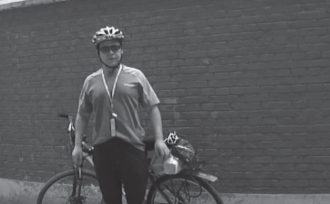黑狼语录：
- 对于走马观花的旅游和各种人造的景点，我一直提不起兴趣。
- 我宁可在自行车上走马观花，也不想在汽车上走马观花！
已经三周没有在周末骑单车压马路了，当然有各种各样的理由，今天终于又挣脱束缚，摆脱各种理由，再一次出发。
在8 点出门，老规矩，来一张出发照片。
早晨有点 风、 雾，没有太阳。今天的目标是潭拓寺。
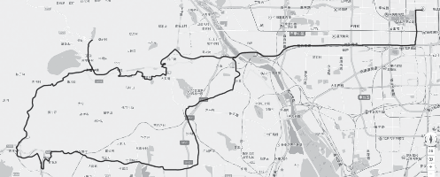现在越来越简单，在网络地图上比划了几下，就定下了路线。
8:30 到了西四环，今天天气唯一的好处就是不晒，没有太阳。
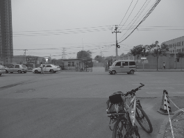8:48 到了五环， 骑行了 13.2公里。忽然发现，莲石路居然已经走到了尽头，感觉不对，把地图拿出来，发现莲石路还应该有一段，应该是走错了。
确实走错了，莲石路应该到六环才对。为了回归正路，穿过了一个小区，小区内居然有 10 多个防止车辆超速的那种坎，把我颠的都快散了。
9:05， 走了 17 公里， 到了京原路、芦井路，算了，到六环再说吧。
9:10， 看 见 了 个 路 牌， 刷~~，骑过去了，想了想又绕了回来。
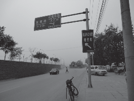幸亏！要不又走错了！
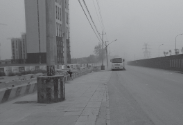路边一个正在建设的楼盘，好家伙，路上搞得尘土飞扬，还有几个保安飞舞着大扫把，能见度特低。
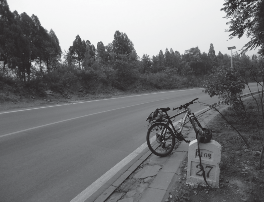一个上坡的途中，路边休息
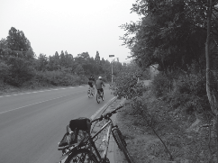碰到了一对父子，路上几次碰到，最后一次在潭拓寺
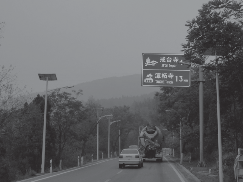10:08，喘，大喘，第一个大上坡，真够长的，速度在 10 公里左右。
10:16，到了戒台寺，这一段都是上坡，共走了 31 公里。
一过戒台寺，一个大下坡，好爽！最快速度达到了 46 公里 / 小时。
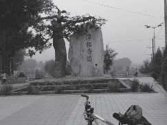一路下坡，到了潭拓寺镇。飞快、凉快。
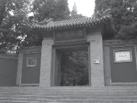又经过了一个 4 公里左右的上坡， 10:50，到了潭拓寺，休息。
精神还非常旺盛，体力也还旺盛，继续按照路线图前进！
过了潭拓寺，路上的车子一下子少了很多。
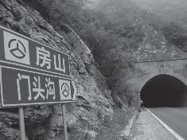一个大上坡，到了一个隧道，经过这个幽深黑暗的隧道的时候，居然感觉忽忽悠悠、头上脚下，黑暗的隧道骑车的感觉很不舒服。现在时间 11:40，骑了 47 公里。
12:11，已经错过了饭点，路上的饭馆开门营业的很少。算了，吃自备的干粮吧。
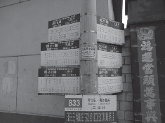农家院门旁，好密集的站牌。
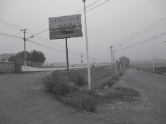回来的路，和设计的路线相差甚远，走在了一条地图上都没有的路，然后就来到了青龙湖。
居然到了青龙湖，这个地方以前来过呀，当时开车来的，路上堵的满满的，车子后来就停在下边的路旁。今天居然这么冷清。
13:47，走到了怪村，在青龙湖北侧偏东，没发现有什么怪的。现在走了 76.5 公里。
15:22，骑了 98 公里，到了杜家坎，这路线，一直在跑偏，一直在纠正，却是越纠正越偏离。第二次路过杜家坎，这条路还是不熟，差点又错。天气很凉爽，就是风有点大。
15:44，到了西四环，106 公里。
16:30，到家了，总里程116 公里，平均速度18.2，最快速度47.7 公里/ 小时。这次感觉身体状态很好，尽管中午吃的不多，看来我的体能提高了不少。